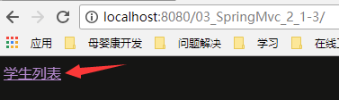
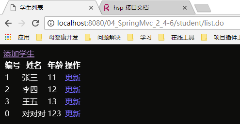
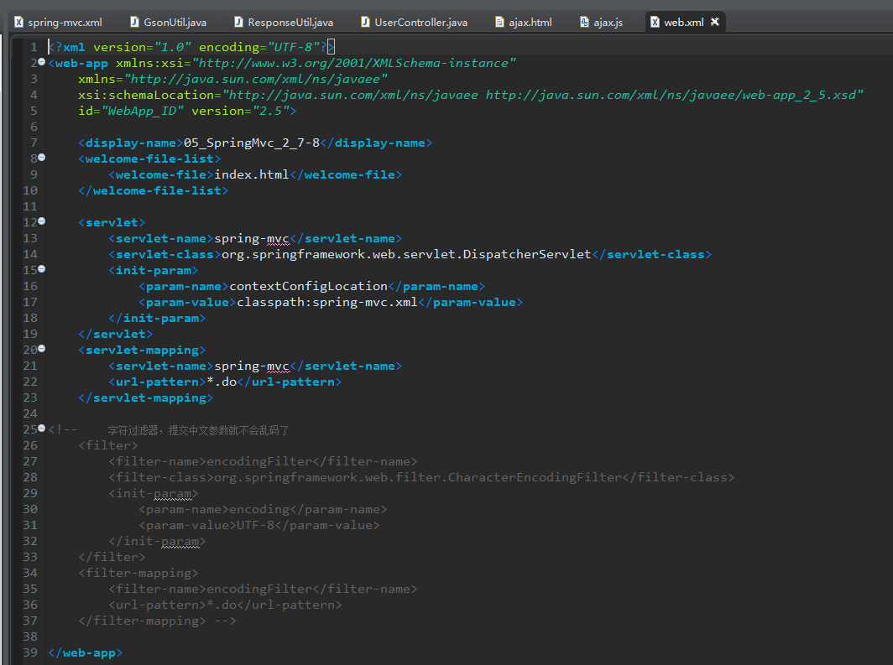
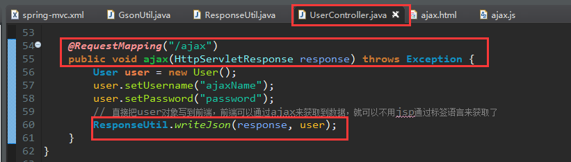
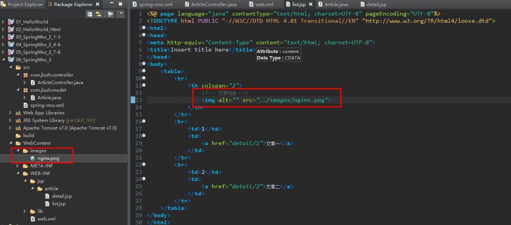
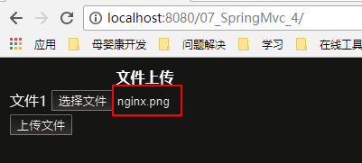
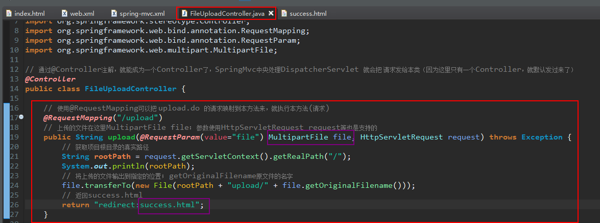

SpringMVC
参考：java1234 - 一头扎进系列
制作日期：2018-6-20 - 2018-6-24
制作人：小桅[yw_forgit@163.com]
第一章 问候 SpringMVC 他大爷
1、SpringMVC 简介
2、SpringMVC 版 HelloWorld 实现
SpringMVC 是一套功能强大，性能强悍，使用方便的优秀的 MVC 框架；
eclipse新建动态web项目
web版本选择2.5交互式就行了
目录结构如下：
JRE System Library如果太旧，就换一下。
去docs下，打开mvc.html
复制
粘贴到WEB-INF下的web.xml中，并且修改一下，注释看不懂没关系，那是我后来加的：
docs复制
在src源码目录下，新建一个文件，叫spring-context.xml，粘贴，并修改
目录如下：
docs复制，修改
粘贴到spring-content.xml，修改
此时spring-content.xml可能会报错。
添加jar包，这是Spring的所有jar包，请注意，MVC只是Spring的一个部分，是不能脱离Spring而单独存在的。
然后clean一下，
spring-content.xml就没有报错了
通过eclipse的jsp模板新建helloWorld.jsp
此jsp可能会报错，因为需要java的server包支持，故下面新建Server
添加目录
把Server Runtime这个包引入进来，这个是Tomcat依赖的包，Tomcat自己会自带，只需要开发时引用即可。
然后jsp就不报错了。
在eclipse发布部署项目
启动会发现报错，因为缺少jar包
commons-logging。日志打印使用
standard.jar。standard.jar 是JSP 标准标签库，和jstl.jar 一起使用，在1.0的版本中，但在jstl-1.2.jar 就不在需要了。
再重启，然后访问http://localhost:8080/01_HelloWorld/helloWorld ，后台报错，还是缺包
jstl。jsp用到的与standard.jar结合使用

注意哈，WEB-INF目录下的文件是不能直接通过浏览器访问的，即不能直接访问http://localhost:8080/01_HelloWorld/helloWorld.jsp ，只能通过服务器程序内部访问WEB-INF。
故使用index.html来转换，然SpringMvc来跳转到对应的jsp
整理一下整个过程：
用户访问http://localhost:8080/01_HelloWorld/ ，其实就是去到了index.html（默认的根目录就是访问index.html）
index.html代码
如图点击“问候”，
根据index.html，就会发起helloWorld.do的请求。
相当于直接访问了http://localhost:8080/01_HelloWorld/helloWorld.do
由于web.xml配置了SpringMvc的中央处理器DispatcherServlet，故满足 *.do 的请求就会给DispatcherServlet
然后Spring根据spring-mvc.xml配置文件，对com.jluzh.controller包下的类的注解进行扫描
就扫描到了HelloWorldController，请求也就给了他，继续给到helloWorld方法进行处理请求，如下图。

上面处理完请求就会返回helloWorld，然后根据spring-mvc.xml的配置，如下，
其实最终返回给客户端是 /WEB-INF/jsp/helloWorld.jsp 动态页面的内容。
然后通过jstl标签语言获取到了后台返回msg的值，展示出来给前端，如下图
返回html页面的例子：

web.xml不变
返回页面改为html

Controller
返回到这里
最终的显示
第二章 SpringMVC 控制器
1、@RequestMapping 请求映射
2、@RequestParam 请求参数
3、ModelAndView 返回模型和视图

访问项目根目录即访问index.html（在web.xml有配置）
学生列表
点击“学生列表”之后，会请求 student/list.do ，根据web.xml配置的，会把请求给DispatcherServlet分配spring-mvc.xml注解扫描到的Controller，根据StudentController类的@RequestMapping("/student") 可以 /student… 的请求给StudentController类，继续根据@RequestMapping("/list") 可以准确把 /student/list.do 请求给StudentController类的list方法去处理。StudentController代码如下：
然后根据spring-mvc.xml的viewResolver 配置，list请求就会返回 项目根目录+ student/list.jsp.
就可以在浏览器看到如下图：
添加学生
点击“添加学生”，就会请求preSave.do，前缀是与上一个页面是一样的，这里使用了相对链接，绝对链接是http://localhost:8080/03_SpringMvc_2_1-3/student/preSave.do ，然后请求就会进入StudentController的preSave方法，如下（注意这里没有携带id这个参数）：
返回student/add.jsp
就可以在浏览器看到这个效果了。
更新学生
返回“学生列表”，如图
点击“更新”，下图是list.jsp页面可以看到是携带id参数的请求：preSave.do?id=xxxx
请求到了preSave方法
update.jsp
浏览器可以看到
4、SpringMVC 对象属性自动封装
5、SpringMVC POST 请求乱码解决
6、Controller 内部转发和重定向
1）添加
演示
环境不变接着上面的
发现post请求中文会乱码的，后面解决
代码实现
add.jsp
StudentController.java 添加一个保存添加学生数据的请求接口
2）解决post请求中文乱码
只能解决post请求的乱码问题，get请求的不行。
在web.xml的web-app标签内添加字符过滤器，即可（去网上找的，官网没找到）。
<!-- 字符过滤器，提交中文参数就不会乱码了 -->
<filter>
<filter-name>encodingFilter</filter-name>
<filter-class>org.springframework.web.filter.CharacterEncodingFilter</filter-class>
<init-param>
<param-name>encoding</param-name>
<param-value>UTF-8</param-value>
</init-param>
</filter>
<filter-mapping>
<filter-name>encodingFilter</filter-name>
<url-pattern>*.do</url-pattern>
</filter-mapping>
演示
中文就不乱码了

3）更改
演示
代码实现
update.jsp
StudentController.java 修改之前的save方法，与“添加”的保存公用。不传递的参数会被自动封装为默认值，int默认为0
4）删除
演示
代码实现
list.jsp添加一个删除的链接
StudentController.java 删除成功之后，使用forward转发到list.do
7、SpringMvc 对 ServletAPI （javax.servlet）的支持
比如HttpServletRequest request, HttpServletResponse response等
演示
代码实现
web.xml只需要一个中央处理器
spring-mvc.xml 只需要设置包的扫描
login.jsp 表单直接提交到user/login.do
UserController.java 简单使用request、response获取或者设置一些东西
User.java实体类
main.jsp 获取session的数据
目录结构：
额外提一下：
以下方式都是支持的
8、SpringMvc 对 Json 的支持？
不常用SpringMvc的json
演示
接着上小节的环境
代码实现
添加 mvc标签支持、注解驱动
去docs复制
粘贴如下
常用原始的json
演示
代码实现




第三章 Rest 风格的资源 URL
1、Restful 风格的资源 URL 简介
url后面没有后缀的就是Restful风格的，eg：http://localhost:8080/06_SpringMvc_3/article/list ；而一般都是http://localhost:8080/06_SpringMvc_3/article/list.do 或者.html .jsp等。
但是使用Restful风格虽然看起来比较优雅，但是是要付出代价的，需要对静态资源做额外的处理。
2、SpringMvc 对 Rest 风格的支持
3、@PathVariable 获取 Url 变量
演示
代码实现
拦截所有请求
正常配置
现在看起来没有什么代价，但是如果有静态资源（比如.jpg .js .css等）的访问就有问题了。
4、Restful风格下对静态资源的特殊处理
1）代价
演示
访问图片时，前端报错，后端提示没有.png请求

代码实现
与上面的环境一样，只是改了两个地方

问题分析
如下图，在web.xml配置的SpringMvc中央处理是拦截所有的请求的，包括静态资源.png的请求，拦截到的请求直接转发给对应的Controller，我们的Controller当然没有.png的请求啦，故就会警告: No mapping found for HTTP request with URI [/06_SpringMvc_3/images/nginx.png] in DispatcherServlet with name 'spring-mvc'，而前端因为访问不到图片，就报错。
2）解决
演示
代码实现
环境同上，稍作修改，注意mapping、location的关系别搞错了。
访问的静态资源变一下即可
css等这些静态资源也一样，就不做演示了。
第四章 SpringMvc 文件上传
1、SpringMvc 单文件上传
演示


代码实现

报错了：HTTP Status 400 - Required MultipartFile parameter
'file' is not present
那是因为没有配置文件上传的bean，去文档找到配置复制
修改如下
再访问，添加文件，点击“上传文件”
报错：java.lang.NoClassDefFoundError: org/apache/commons/fileupload/FileItemFactory， 缺包commons-fileupload，去网上下载commons-fileupload-x.x.x.jar回来添加进来。
再访问，添加文件，点击“上传文件”
报错：java.lang.NoClassDefFoundError: org/apache/commons/io/IOUtils，仍然缺包，下载commons-io-x.x.jar
然后再访问就好了。
查看文件
项目部署目录：
E:\Code\SpringMVC\.metadata\.plugins\org.eclipse.wst.server.core\tmp0\wtpwebapps\07_SpringMvc_4\
但是源码目录是没有所上传的文件的：
这现象在正式环境是不会出现的，只是开发环境中Tomcat是以插件的形式安装在eclipse上，故部署路径在Tomcat，则上传的路径也在Tomcat，故不会在源码项目内。
2、SpringMvc 多文件上传
演示
E:\Code\SpringMVC\.metadata\.plugins\org.eclipse.wst.server.core\tmp0\wtpwebapps\07_SpringMvc_4\
代码实现
第五章 整合Spring、Mybatis
请转移到Mybatis教程去